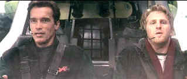

| 6th Day, The/ B,A- |
| Columbia/2000/123/ANA 2.35 |
After Arnold Schwarzenegger's disastrous outing in End of Days, I approached The 6th Day with trepidation and reserve. To my delight, The 6th Day is a very good genre flick. Well paced by director Roger Spottiswoode, this "cloning" adventure set in the near future provides plenty of action and some excellently drawn characters.
 |
| Hot rod pilots. ©Columbia |
To be sure, there's a conspiracy, but its not exactly one of those tiresome
take over the world deals. More soundly based on greed and ruthlessness, the plot of The 6th Day
features a mega-millionaire with his own ideas of how to control fate. How does Adam Gibson,
the owner of a nifty air charter service fit in all this? Adam's just a spec of DNA in the wrong
place at the wrong time. Predictably, Gibson sticks around like some wind-blown dirt lodged in your
eye. When you finally can see, everything clears up nicely. The clone work meshes nicely with the
production design details and editing. Dolly would be pleased. There are a fair share of
improbabilities that keep The 6th Day from reaching the next level of the entertainment
stratosphere, but it delivers entertain with the reliability of a good clone.
Schwarzenegger does some good work in The 6th Day. The quick
"Arnold" quips are kept at bay, though they stand up poorly when they escape. Arnold
plays a pretty ordinary family guy with convincing warmth. Rest assured, when he needs to flex his
muscles away fromt he mirror, the action star is more than up to the task. The assortment of
villains are well cast, headed by Tony Goldwyn, Michael Rooker and Sarah Wynter. Goldwyn's Michael
Drucker acts within the constraints of his character and Rooker and Wynter seem more like
Replicants than anything else. Did I say Replicants? Two turtles are walking across the desert.
Robert Duvall has some excellent screen time as a scientist willing to turn his head a bit too
easily and Wendy Crewson smooches up again Arnold in the most natural way. It appears that a chunk
of Michael Rappaport's part as Hank Morgan, Gibson's employee, has been eaten away by time
constraints.
The slick production design visuals are captured with an elegant camera
lens by cinematographer Pierre Mignot. Trevor Rabin's score helps drive the action. The 6th Day
is one of Roger Spottiswoode's best efforts. The director's crisp no-nonsense style suits the
material well and keeps the action going at a roller coaster pace.
The 6th Day phasers fire up maximum entertainment in this outstanding DVD
transfer. Very sharp images and excellent three-dimensionality are consistent hallmarks of this
fine disc. It's a glossy presentation. Blacks are rich, deep, with snappy sheen. The color levels
are outstanding. Dig some of those deep reds. Contrast and overall light output are excellent.
Shadow detail is well balanced. Perhaps a tad of edge enhancement keeps the DVD a shade shy of
reference, but it's a close call. The sound is whipped up to perfection in this Dolby Digital 5:1
recording. Front to rear and side to side pans are outstanding and information is delivered to
surrounds with pinpoint accuracy. The mix does not chew the scenery indiscriminately either;
details are presented at subtle but sensible levels.
An audio commentary accompany the isolated music score by Trevor Rabin is the
heart of this special edition. A "RePet" infomercial that runs a couple of minutes is
pretty funny. There's also a short "RePet" TV spot. Talent files and theatrical
trailers complete the bill.

|
Home Theater Talk
Cartoons |

 Brad Lang continues to add more interesting material to the extensive
collection at About
Classic Movies. Everything from actors and actress to your favorite directors
is linked at the site.
Brad Lang continues to add more interesting material to the extensive
collection at About
Classic Movies. Everything from actors and actress to your favorite directors
is linked at the site.

The home of John Tisch's invaluable Poster Price Almanac. Every serious poster collector
uses the Almanac as a reference.
MRQE
Find reams of movie and DVD reviews at the Movie Review Query Engine, a index of reviews appearing on the Internet.

The DVD
Package can be the bane of the collector. Click on Rants and Raves for more.
 Jim
Doolittle
Jim
Doolittle
ISF Instructor. Premier calibrator and expert front projection system setup technician in the
Boston area.

Elegant DVD portal with news, reviews, links and information
galore.